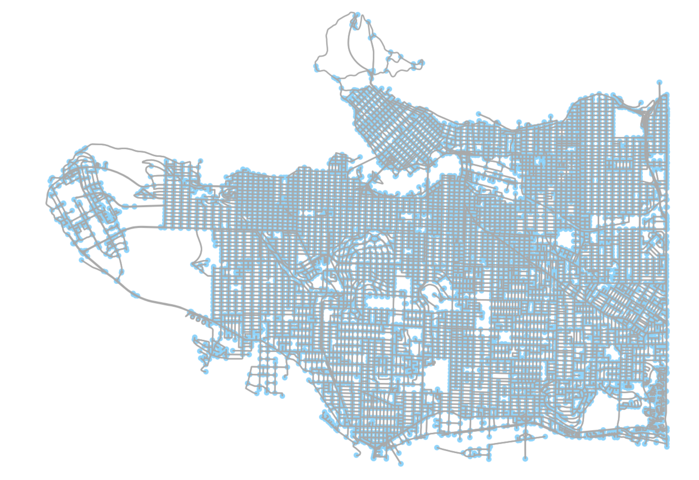
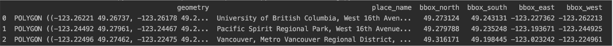
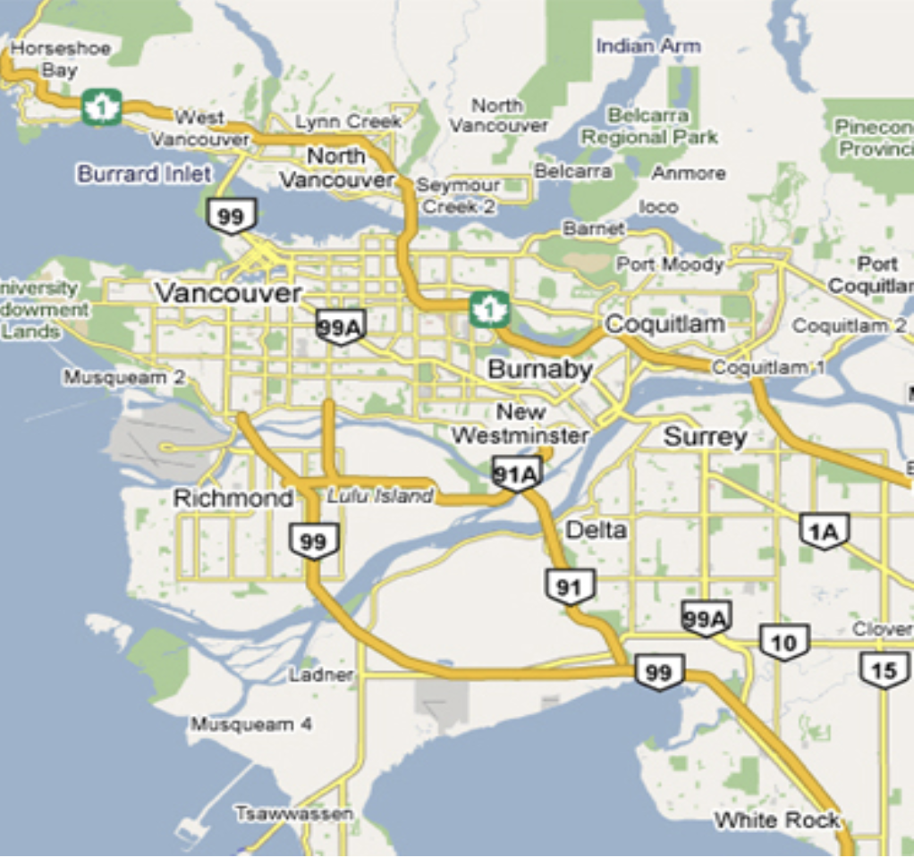
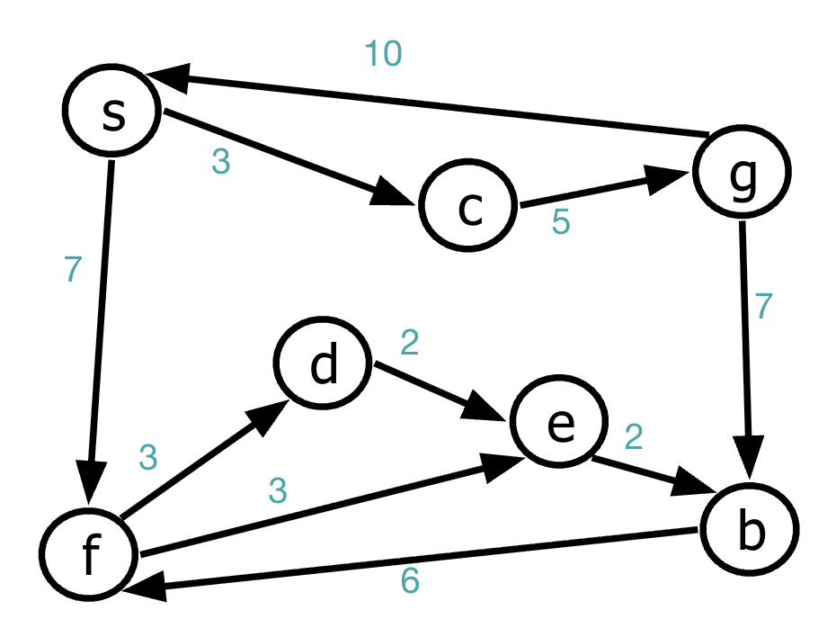

Week 11: Maps, Routes, and the Hardest Easy Problem
Graphs went geographic this week. We took everything we know about vertices and edges and plugged in a real dataset: the road network of Vancouver. By the end of the week we could find the shortest driving route between any two points in the city — and had a new question brewing for Week 12.
Your Growing Toolkit
- Representation — how we encode meaning
- Collections — how we group things
- Control flow — how we make decisions and repeat
- Functions — how we name and reuse logic
- Abstraction — how we hide complexity
- Efficiency — how we measure cost
This week: Weighted graphs + Dijkstra’s Algorithm — graphs meet the real world!
Tuesday: From Sudoku to Street Maps
One Last Look at Sudoku
We started by closing the loop on Sudoku. We asked: could we be smarter? Constraint propagation, for instance, can prune most of the state space before we ever start searching. But there’s a deeper issue:
As the board grows (4×4 → 9×9 → 16×16 → 25×25…), the number of states explodes faster than any polynomial. Sudoku is known to be NP-Complete — a member of the class of problems where no one has found a guaranteed fast algorithm, and many believe none exists.
This doesn’t mean we give up! It means we use clever tricks: constraint propagation, better search orderings, heuristics. But for any general solver on large boards, worst-case cost is exponential.
The World Is a Graph
With Sudoku behind us, we asked a new question: what if the graph isn’t made up — what if it’s the actual world?

The key insight: the data is separate from the visualization. Google Maps shows you a pretty picture. But underneath is a graph — intersections as vertices, roads as edges, distances as weights. Everything Google Maps does is graph algorithms on that data.
We get access to the same data for free.
OpenStreetMap: Wikipedia for Maps
OpenStreetMap (OSM) is the open-source alternative to Google Maps’ data. Like Wikipedia, it’s built and maintained by volunteers. Unlike Google, its data is free to use, query, and download.
We access it through a Python library called osmnx, which handles all the API calls and gives us a NetworkX graph:
import osmnx as ox
place_names = ['UBC', 'Vancouver', 'Stanley Park']
ox.geocode_to_gdf(place_names)
The result is a GeoDataFrame — a pandas DataFrame where one column stores geographic shapes (polygons for regions, points for locations). Each row is a place, and the geometry column holds its boundary on the map.
From Map to Graph
The pipeline from raw geography to graph algorithms has three stages:
1. Assemble the data Use OSM, Statistics Canada, local open data portals, or other sources. Build a GeoDataFrame. This is mostly the art of wrangling geographic data.
2. Compute on the data osmnx converts map data into a NetworkX graph where: - Nodes = intersections (with latitude/longitude) - Edges = road segments (with attributes: length, speed limit, one-way, etc.)
Then apply graph algorithms: shortest paths, nearest nodes, connected components, anything NetworkX supports.
3. Visualize - matplotlib for static maps - folium for interactive, zoomable, web-based maps
Once you’ve built the graph, the geography disappears. Finding the fastest route from UBC to the PNE is just finding a shortest path from one node to another. The road network is just a weighted directed graph. Everything we know about graphs applies directly.
Dijkstra’s Algorithm
Single Source Shortest Path
The question: given a starting location \(s\), what is the shortest route to every other intersection?

This is the Single Source Shortest Path (SSSP) problem:
- Input: A directed graph \(G\) with non-negative edge weights, and a start vertex \(s\)
- Output: A subgraph \(G'\) — the shortest (minimum total cost) path from \(s\) to every other vertex
The result isn’t just one path — it’s a whole tree rooted at \(s\), with a branch to every reachable vertex.
The Algorithm
Edsger Dijkstra invented his famous algorithm in 1959 — in just 20 minutes, without pen and paper, while on a coffee date. It remains one of the most elegant algorithms in all of computer science.

Setup: - d[v] = best known distance from \(s\) to \(v\) (start at INF for all, 0 for \(s\)) - p[v] = predecessor of \(v\) on the shortest path (start at null)
Repeat \(n\) times: 1. Find the unlabelled vertex \(v\) with the smallest d[v] 2. Label \(v\) (its shortest distance is now final) 3. For each unlabelled neighbor \(w\) of \(v\): - If d[v] + length(v,w) < d[w]: - d[w] = d[v] + length(v,w) - p[w] = v
The key update: d[v] + length(v, w) < d[w] — “can we reach w faster by going through v?”. If yes, update d[w] and record v as w’s new predecessor.
Running Dijkstra’s by Hand

Running Dijkstra’s by hand on a small graph is the best way to build intuition. The greedy choice — always label the closest unlabelled vertex — is what makes it work.
Three key observations: 1. Once a vertex is labelled, its shortest distance is final — it will never improve 2. d[] values only decrease, never increase 3. The predecessors p[] form a shortest-path tree
Fill in the Blank: Dijkstra vs BFS/DFS
All three algorithms explore a graph by maintaining a frontier and expanding it one vertex at a time. All three track which vertices have been “processed.” All three can find paths through a graph.
BFS and DFS treat all edges as equal (or ignore weights entirely). Dijkstra uses a priority queue — instead of first-in-first-out (BFS) or last-in-first-out (DFS), it always processes the vertex with the smallest known distance. This is what makes it find shortest paths in weighted graphs.
The Algorithm Family
| Algorithm | Data Structure | Edge Weights | Finds Shortest? | Frontier Strategy |
|---|---|---|---|---|
| DFS | Stack | ignored | no | dive deep |
| BFS | Queue | all equal | yes (unweighted) | explore in layers |
| Dijkstra | Priority Queue | any non-negative | yes (weighted) | explore by shortest known distance |
Three algorithms. One family. One swap in the data structure changes everything.
What’s Next?
Dijkstra answers “what’s the shortest route between two places?” — but a new question is forming: what if you have ten errands and need to visit all of them? That’s a completely different problem, and it’s one of the most famous in all of computer science.
Week 12: the Travelling Salesperson Problem — and building a real brute-force solver in Vancouver.
EX4 was this week — hope it went smoothly! Use PEX4 for more practice.
Project 2 is due — great work getting it done!